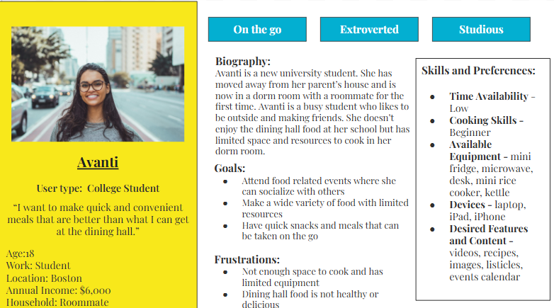
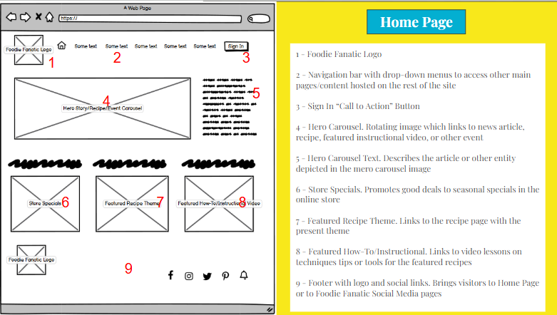

Foodie Fanatics

In my Information Architecture class, every group was given the same assignment. We had to do the information architecture work for a fictional company called Foodie Fanatics. Foodie Fanatics was a cooking website which sold kitchen goods, classes, and recipes. They were redesigning their website and our team would lead them through it. The project was broken down into 8 phases: 1) Discovery 2) Project Planning 3) User Persona Development 4) Site Map Development 5) Wireframe Development 6) Taxonomy Development 7) Site Development and 8) Client Handoff. While we made deliverables for each of these phases, I would like to highlight the user personas and wireframes here.
Creating the user personas was the most interesting part of this class for me. I found them to be an extremely valuable tool for design. For Foodie Fanatics, we developed 5 user personas which represented the different types of users who may be accessing the website. Through looking at what these users needed and valued, we were able to make better design choices. The persona on the right is Avanti, a college student who wants to make quick and convenient meals. She has a low budget, a low skill level in cooking, and doesn't have a kitchen. When designing the taxonomy of the website, we knew that users like Avanti would want to quickly find accessible content like videos and listicles. She would want to be able to find recipes she could make with the limited equipment she had available and would liekly be accessing the website from a mobile device. Using personas like this, helped us think of design considerations that would make the website useful to all users like Avanti.Once we moved on to the next stage in the project, the collection of user personas were frequently used to make sure that aspects of our designs would appeal to each part of the company's user base.
These personas were especially useful when we began to make wireframes of the website, as shown on the left. We wanted to make sure that the homepage would highlight content that users wanted to see. Wireframes helped us to both plan that out for ourselves and to show those plans to our fictional client. When a user like Avanti goes to the Foodie Fanatics homepage, she needs to see the content that she's interested in. Showing rotating carousels of images which link to articles, recipes, and videos will quickly recommend relevant content with minimal effort on the part of the user. However, users like Avanti were only one part of the overall user base. We had to make sure that each persona would be able to look at the homepage and quickly find the information that they were seeking. Doing work like this both helped me realize the work that goes into information design and taught me tools that I can use in the future to make more accessible work.